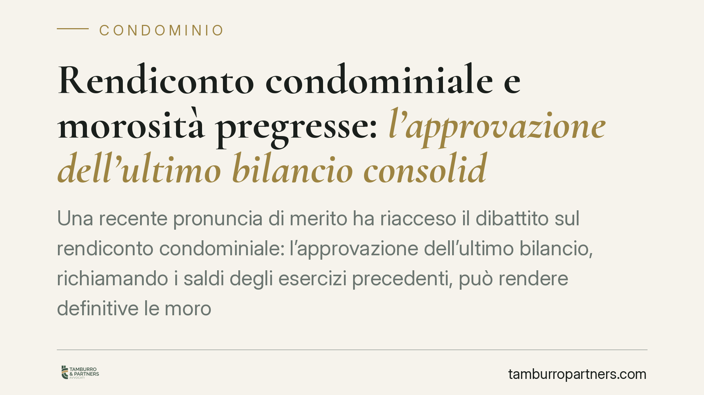

Rendiconto condominiale e morosità pregresse: l'approvazione dell'ultimo bilancio consolida i debiti vecchi?
Una recente pronuncia di merito ha riacceso il dibattito sul rendiconto condominiale: l'approvazione dell'ultimo bilancio, richiamando i saldi degli esercizi precedenti, può rendere definitive le morosità pregresse non impugnate? La questione tocca da vicino condomini morosi e amministratori. Il tema, però, è meno pacifico di quanto sembri e va maneggiato con prudenza.

Il caso e la questione
Il tema è ricorrente nella pratica condominiale: un condomino trascina morosità da più esercizi. L'amministratore predispone il rendiconto annuale che, per prassi contabile, riporta i saldi pregressi nella cosiddetta situazione patrimoniale. L'assemblea approva. Quel condomino può ancora contestare, anni dopo, i debiti maturati negli esercizi passati?
Alcune pronunce di merito hanno valorizzato il principio di continuità del rendiconto per affermare che l'approvazione dell'ultimo bilancio, richiamando i saldi anteriori non impugnati, ne consoliderebbe l'esistenza. Precisiamo subito che si tratta di orientamenti di merito, non vincolanti oltre il singolo giudizio, e che la questione resta oggetto di contrasto. Non va quindi assunta come regola pacifica.
Inquadramento normativo
Due le disposizioni rilevanti.
L'art. 1130-bis c.c. disciplina il contenuto del rendiconto condominiale (registro di contabilità, riepilogo finanziario, nota sintetica esplicativa) e il diritto dei condomini di prenderne visione. È importante essere chiari: la norma non enuncia alcun "principio di continuità" che cristallizzi i saldi degli esercizi precedenti. Il principio di continuità è un'elaborazione interpretativa e giurisprudenziale, fondata sulla natura contabile del rendiconto e sul richiamo dei saldi di apertura. Chi lo invoca costruisce quindi un ragionamento interpretativo, non applica un dato letterale della legge.
L'art. 1137 c.c. regola l'impugnazione delle delibere assembleari. Il termine è di trenta giorni, ma il *dies a quo* è differenziato: decorre dalla data della deliberazione per i condomini presenti e dalla data della comunicazione del verbale per gli assenti. Superato il termine, la delibera annullabile diventa inoppugnabile. Restano invece deducibili senza limiti di tempo i vizi che comportano nullità (ad esempio delibere su materie estranee alle attribuzioni assembleari o con oggetto impossibile o illecito).
Il punto controverso: definitività dei debiti pregressi
Qui serve cautela. Un conto è dire che una delibera di approvazione non impugnata diventa definitiva sotto il profilo dell'annullabilità. Altro conto è affermare che essa renda automaticamente incontestabile l'esistenza e l'entità del credito verso il singolo condomino.
La giurisprudenza di legittimità, in tema di opposizione a decreto ingiuntivo condominiale, riconosce al condomino la possibilità di contestare l'esistenza o l'ammontare del credito anche in sede di opposizione, salvo che sul punto si sia formato un giudicato. La delibera assembleare costituisce prova del credito e legittima il decreto ingiuntivo, ma prova del credito e definitività non sono la stessa cosa.
Esiste dunque una distanza tra chi ritiene che il richiamo dei saldi nell'ultimo rendiconto ne consolidi la definitività e l'orientamento che continua ad ammettere la contestazione in opposizione. Presentare la prima tesi come acquisita sarebbe scorretto.
Implicazioni pratiche
Per il condomino che ha accumulato morosità, il messaggio è duplice: non affidarsi all'idea che i debiti "vecchi" siano automaticamente contestabili in ogni sede, ma nemmeno rassegnarsi all'idea che l'ultima approvazione abbia chiuso ogni discorso. Molto dipende dai vizi dedotti e dalla formazione o meno di un giudicato.
Per l'amministratore, la redazione accurata del rendiconto e la corretta imputazione dei saldi restano centrali, così come la prova della regolare convocazione e comunicazione dei verbali: da lì decorrono i termini di impugnazione.
Cosa fare in concreto
- Verifica i termini: se sei condomino e vuoi contestare una delibera di approvazione, calcola i trenta giorni dal *dies a quo* corretto (deliberazione se presente, comunicazione se assente).
- Distingui il vizio: individua se ricorre annullabilità (soggetta ai 30 giorni) o nullità (deducibile senza limiti). È il crinale su cui si gioca la difesa.
- Documenta i pagamenti: conserva prova di versamenti e contestazioni pregresse; in opposizione a decreto ingiuntivo restano un argomento difensivo.
- Per l'amministratore: assicura tracciabilità delle convocazioni e delle comunicazioni dei verbali, e coerenza contabile tra saldi di chiusura e di apertura.
- Valuta prima di agire: verifica se esiste già un giudicato sul credito, perché muta radicalmente le possibilità di contestazione.
Un'avvertenza doverosa
Le pronunce di merito che valorizzano la continuità del rendiconto non hanno efficacia vincolante e convivono con un orientamento di legittimità più garantista per il condomino. Ogni situazione va valutata sui documenti concreti: delibere, verbali, comunicazioni, eventuali giudicati.
---
Contributo informativo a cura di Tamburro & Partners - Avv. Giuseppe Tamburro. Non costituisce parere legale.
Ogni condominio ha una storia a sé.
Se gestisci un'amministrazione e vuoi un confronto su una specifica questione condominiale, scrivi allo studio. Ti rispondiamo entro un giorno lavorativo.